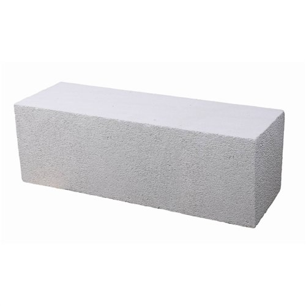

High-Precision AAC Blocks for Energy-Efficient Masonry
Product Code: P027
RS CONSTRUCTIONS supplies top-tier Autoclaved Aerated Concrete (AAC) Blocks manufactured using high-pressure steam curing. Weighing up to 50%–60% less than traditional clay bricks, AAC blocks significantly reduce structural dead load, speed up construction time, and offer excellent thermal efficiency for residential and commercial structures.
Technical Specifications & Properties
- Standard Dimensions: 600mm x 200mm x (50mm / 75mm / 100mm / 150mm / 200mm thickness)
- Standard Conformance: IS 2185 (Part 3) certified
- Dry Density: 550 – 650 kg/m³ (Lightweight compared to 1800 kg/m³ red bricks)
- Compressive Strength: 3.5 to 4.5 N/mm²
- Fire Rating: Up to 4 hours (Depending on wall thickness)
- Supply Unit: Per Cubic Meter (CBM) or Piece basis
- Tax Rate: 12% GST (Applicable)
Recommended Applications
1. High-Rise Framed Structures & Infill Walls
Drastically reduces the dead weight on RCC beams and foundations, allowing savings on structural steel and concrete.
2. Thermally Insulated Interior & Exterior Masonry
Ideal for modern residential apartments, commercial offices, hospitals, and hotels requiring lower HVAC power consumption and soundproofing.
Get a Wholesale Price Quote
Contact our sales team today for bulk pricing, bulk delivery options, and technical datasheets.
Request AAC Block Quote